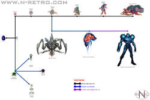

As you go through the door you get the
feeling that you are being watched again. This time there is no
explanation beyond the fact that there IS someone watching you. You
quickly look around and
realize that there is another you on the other side of the room. How is
this
possible? It's you but you know that it is not. This version of you is
wearing
a black suit. Thinking back you reflect on all your previous excursions
and
try to brain storm who would create something like this or how. Space
Pirates?
No they can't create something like this. This is too advanced even for
them. The thing stands and aims at you. You watch in amazed horror as
it CHARGES A BEAM CANNON BLAST!!! You launch yourself through the
nearest door and
escape the creature for now.
As you observe your surroundings you scan a computer that holds some
intruiging information. You find logs about this creature you have just
met. It is
called "Dark Samus" The space pirates found it on Tallon IV! It seems
to
be an exact copy of yourself except that it is enhanced by phazon
mutation.
..........OH NO!!!! There is a chart and it shows how this creature has
come to be.

It's Prime!!! Ing Possesed?
hmm.....Whatever is going on here you must destroy this
abomination.Hurry let's take care of
the mission then we'll finsh this creature off.